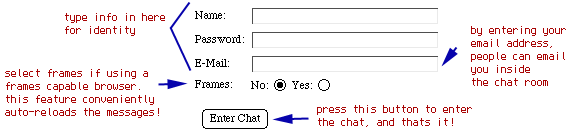
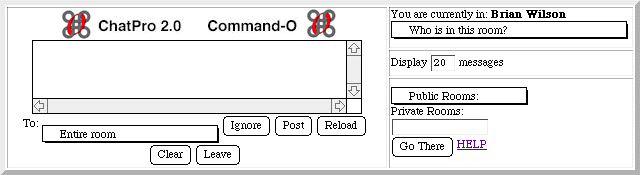
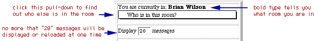
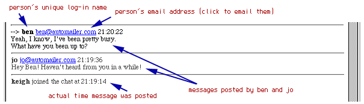
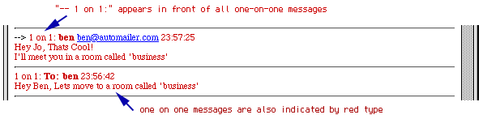
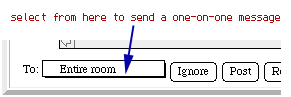
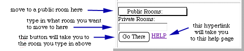

ChatPro is a cgi script written in Perl by Command-O Software to allow real-time "chatting" with people anywhere else in the world so long as they are in the same chat-room as you. Careful design was implemented to insure ChatPro would be compatible with every forms capable browser. It is best if your browser also supports tables, but this isn't a necessity.

There may be a link to a schedule of meeting times on this page. And there should be a link to this help-file, or another help-file set up by the person who put the script up on the site.
Once you enter your name and password press the button that says "Enter Chat" (or something similar) and you will be taken to the room designated as the entry room by the person who set the script up on this site.

There may be a link to this help-file here. On the right you will find a pull down entitled "Public Rooms:". If you wish to meet someone in a Public Room, you should select which one and press the button entitled "Go There" (or equivalent). The next link is called "Change Rooms:", this takes you to the part of the page that allows you to change rooms, I'll get into that in a minute. There is also a link called "Messages:" this links you to the part of the page where all the messages are. With most browsers you will be able to see the top of the messages from this point anyway, but people using Lynx won't be able to see them without selecting this link or scrolling down a couple screens.
Next is a big text entry field. This is where you type your message. The text will automatically wrap from one line to the next. If you want a line break when your message is displayed to everyone else press return, otherwise just let the text wrap by itself. HTML tags are not allowed because it would be too easy to mess the page up if they were. If someone started a table but posted before completing it the whole page would be messed up. If someone had an img tag to a large image everyone would have to wait for the image to load.
One feature related to hyperlinks which is very resourceful is html recogonition. ChatPro will recognize if you type in "hey, look at http://www.mypage.com" and will automatically put the necessary html tags around your url so another person can merely click on your url like any other hyperlink. Next are a series of five buttons:
Post: Press this button to send the message in the text area above. Your message will be added to the conversation and the page will reload showing you the latest conversation. If you press this button with an empty text area above the page will reload to show you the latest conversation, but it won't post anything.
Reload: Press this button to see the conversation since the last time the page was loaded. New conversation will not be displayed automatically, so you need to press this to follow what is going on. If you press this button with text in the message field the page will reload and the text will remain in the unsent message area and will not be posted.
Clear: Press this button if you want to erase all the text in the message area without posting it. The page will not reload when you clear the text.
Leave: Press this button when you are done chatting and want to get back to the outside world. When you press "leave", a message will be displayed to everyone saying that you left, your name will be removed from the visitors list, and you will be taken to a page determined by the person who set the script up on this site.

To the right, is a pull-down entitled "Who is in This Room?". Upon clicking on this pull-down, you will see who is in the room you are in. Above this pull-down you will find in bold type which room you are in as well. A person's name is added to the visitors list when they enter the room, and a message is displayed in the message area saying that person entered. Their name is removed when they click "Leave" on the control panel and a message is displayed saying they left. If a person does not reload for a given amount of time (determined by the person who set the script up) their name will be removed from the visitors list (but no message will be displayed saying they left).

Below the control panel are all the messages. If your browser supports tables they will look like the image above. The name of the person sending the message will be in bold followed their email address as a hyperlink (if they specified it when entering the chat). After the email link, is the time (local time for the server) they sent the message, and on the next line is their message.


"One on one" messages are for sending messages to one specific person who is in any room. Every person currently in any room will have a button with their name in it. Type your message for that person in the text field and then select from the pull-down menu the person you would like to send a personal message to. Then press the "Send" button to send it to them. You will be returned to the main chat screen for the room you are in.
All one on one messages will appear preceded with "--> 1 on 1:". The message will appear as any other message, but it will be sent ONLY to the person you specify. Red text also helps to identify one to one messages.

On the right you will find a pull down entitled "Public Rooms:". If you wish to meet someone in a Public Room, you should select which one and press the button entitled "Go There" (or equivalent). The script will display a message to the current room saying you left that room and your name will be removed from the current rooms visitors list and you will be taken to the new room.
The person setting up the script has the choice of whether or not to allow private rooms, so this paragraph may not apply to you. Below the public rooms changing area is a similar area for private rooms. Here instead of a menu listing the names is a text entry field. You must enter the name of the private room you want to enter and then click the button that says "Go There" (or equivalent).
If there is any text in the private rooms field the script assumes you want to go to a private room, if the private room field is empty it assumes you want to go to the selected public room.
If the room you requested does not already exist it will be created automatically. When other people request a private room with that name they will be taken to the same room. So if you tell someone to meet you in a private room called "Business" you will both end up in the same room when you enter "Business" in the private room text area. The names of the private rooms will not be displayed anywhere, so people must know the name of a room to be able to enter it. (Room names ARE case sensitive, so you must capitalize identically)
Many hard months have been put into developing the best chat software available anywhere in the world. Thanks to everyone who has helped with all of the testing. All of the many suggestions and ideas of numerous people have made this project happen.